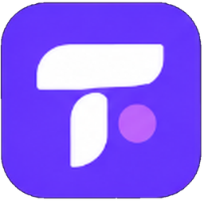

Трудомикс · Загрузка
Интерактивное превью для сайта и Android · выбранная иконка и тема сохраняются

Трудомикс
Подбираем возможности для вас
Для реального приложения скрывайте экран по завершении инициализации, а не по фиксированному таймеру. Текущий прогресс — демонстрационный.